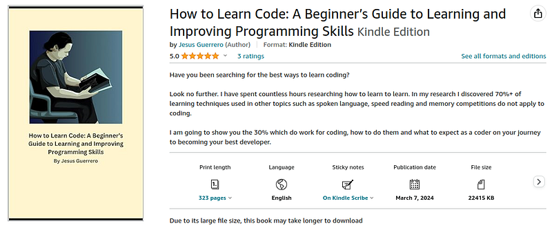

Most people enjoy programming. They love seeing their thoughts and logic come to life from written code to application. From all fields, film, healthcare and even ministry, people learn programming as a hobby because well-it's fun.
Why else would we start learning it? Yea there is an allure to making money through coding but really come on. Don't you want to become an advanced programmer and flex with your epic programs?
You want to make that mobile app, video game or desktop application you have been dreaming about every night.
Yea man and that is okay. It's okay to dream and have a hobby. If you are good enough who knows you may get a job in it. Learning to code is fun and it should be fun.
If you are not having fun learning to code then there is no real reason to do it. If you wanted to make money, you could go into a trade, healthcare or work your way up in retail.
Software Engineering as a field of work takes years of upfront labor anyway before you can even enter. No matter what you do you will need to put your hand on the keyboard and mouse and start hacking away. It takes a daily grind day by day.
In these years of learning you need a strong why. And what should it be?
Why should you learn to code? Because you enjoy it.
Why my book?
For 7 years I spent 4+ hours a day learning to code. I started from the very scratch of learning on things like what is a variable, compiler and loop.
During those 7 years I attended university in Computer Science and amassed a deep set of skills in programming. I was obsessed with learning to learn code. It was my desire, I wanted to know the best and fastest ways to learn code and I wanted it now.
In those 7 years I read nearing 8 books strictly on learning to learn. I took several Udemy courses on learning and I pushed on with trial and error trying to figure out how to learn code fast. Through this I found what works and what doesn't work.
Then, it was 2023 on my 7th year of programming I decided to start a blog on how to learn code.
I wrote over 100 blog posts with an average of 1,400 words per post. For reference, the average non-fiction book is 250-300 words per page. I was writing approximately 5 pages per day.
My blog jessenerio.com is all about how to learn code. The fastest ways are all written there.
After 4 months of writing, I decided to rewrite my blog posts into a book.
How to Learn Code was born...
There is none like mine
I have skimmed and searched many books on learning how to program. Most books out there teach you Computer Science, programming concepts, interview skills and languages. But none take an approach of learning to learn programming.
Specifically I am searching for a speed up to our learning process permanently and long-term. Yes other authors wrote nuggets about learning to learn. They show and tell a few things here and there.
For example, out of all the books I have skimmed and read out there John Sonmez's Software Developer Guide is probably the closest to teaching how to learn. His book is nearing 800 pages and yet learning to learn comes in sparse nuggets.
But none are a full out book focused on learning. That is why I recommend my book. It is unique and teaches you how to learn code well. It does not teach Computer Science but how to learn Computer Science.
How to get the book
I will be updating the book at the beginning of every year. Adding content, rewriting sections and generally updating the book to latest trends.
For this the cheapest way to get the book is by Amazon Kindle. It is $8.99 to buy on Kindle. The Kindle version will always be updated.
Paperback is also available but geez it takes a lot of money to print the book. According to Amazon's self-publishing platform my book costs $13 to print and Amazon takes 60% of profit on top.
I wanted $3 per book so I had to price it at $19.99.
Most people buy the Kindle. There are only 3 or 4 paperbacks out there in the world as I am writing this.
Once I put in the first update to the book early next year that version will no longer be in print. Those 3 or 4 paperbacks will likely never be printed again. So yea, they will be very rare.
But, you will have yourself a new and improved paperback.
Alrighty, happy coding!